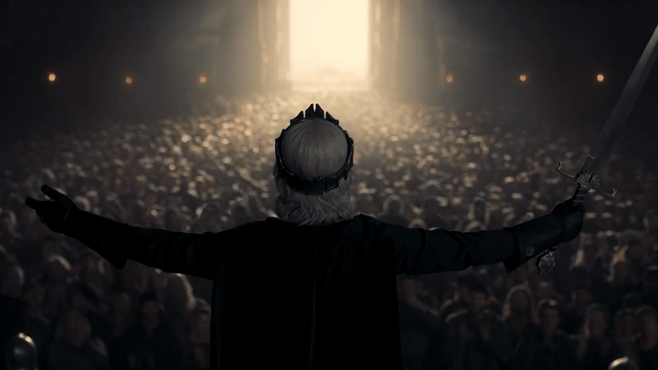
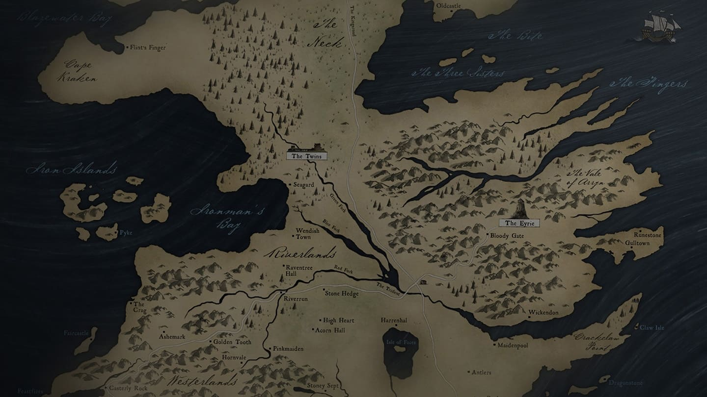

Histoire de la maison Arryn :
La maison Arryn est l'actuelle maison suzeraine du Val d'Arryn. Leur seigneur porte
traditionnellement les titres de Défenseur du Val et de gouverneur de l'Est depuis la
Conquête. C'est une des lignées les plus anciennes et les plus pures de la noblesse andale.
Les Arryn furent rois de la Montagne et du Val durant près de six mille ans, jusqu’à ce
qu’ils se soumettent au roi des Sept Couronnes Aegon le Conquérant au cours de la Conquête.
Ils ont pour demeure les Eyrié, un château imprenable dans le flanc de la Lance du Géant.
Cependant, en hiver, quand le froid et le vent rendent le château complètement inaccessible
et inhabitable, les Arryn s'installent aux Portes de la Lune, au pied de la montagne. Les
membres de cette maison ont la réputation d'être très soucieux de leur honneur, comme
l'indique leur devise : « Aussi haute qu'Honneur ».
Il existe plusieurs branches mineures de la maison Arryn. La plupart de ces branches se
montrent fières de leur patronyme, mais sont très pauvres, à l'exception des Arryn de
Goëville, qui se sont lancés dans le commerce.
Blason
« Aussi haute qu'Honneur »
Map de la maison 1
Histoire de la maison Baratheon :
La maison Baratheon est la maison suzeraine des terres de l'Orage et réside à Accalmie. C'est
aussi l'actuelle dynastie royale depuis que Robert Baratheon est devenu roi des Sept
Couronnes après la rébellion qui a mis fin à la dynastie de la maison Targaryen.
La maison Baratheon succède à la mythique lignée des rois de l'Orage qui régnaient sur les
terres de l'Orage avant la Conquête d'Aegon. Le dernier roi de l'Orage, Argilac Durrandon,
dit « l'Arrogant », est vaincu par Orys Baratheon, demi-frère bâtard d'Aegon et de ses
sœurs-épouses, lors de la bataille du Dernier Orage. Aegon l’en récompense par le don
d'Accalmie, des terres de l'Orage et de la main d'Argella, fille d’Argilac. Orys adopte en
outre la bannière et la devise de la lignée déchue pour sa propre maison.
Blason
« Nôtre est la fureur »
Map de la maison 2
Histoire de la maison Greyjoy :
Les Greyjoy prétendent descendre du Roi Gris, premier souverain légendaire des îles de Fer.
Après la mort du roi Harren le Noir durant la conquête et la séparation du Conflans et des
îles de Fer, Aegon le Conquérant autorisa les survivants des derniers fidèles d'Harren sur
les îles de Fer à choisir eux-mêmes leur seigneur. Ce fut Vickon Greyjoy qui fut élu. Depuis
lors, la maison Greyjoy dirige les îles de Fer en vassale du Trône de Fer, bien que les
aspirations à l'indépendance et au retour à l'Antique Voie restent très fortes chez les
Fer-nés.
Ses armes (une seiche d'or sur champ noir) figurent sur les voiles de ses navires.
Blason
« Nous ne semons pas »
Map de la maison 3
Histoire de la maison Lannister :
Grands, blonds et avenants, les Lannister sont la plus riche et certainement la plus
puissante de toutes les familles du royaume des Sept Couronnes, notamment grâce aux mines
aurifères de l'Ouest. Ils descendent d'une antique lignée des Premiers Hommes dont le
fondateur légendaire est Lann le Futé, personnage de l'Âge des Héros qui prit par ruse la
forteresse de Castral Roc à la maison Castral et d’aventuriers andals qui se sont mêlés aux
Premiers Hommes de l'Ouest sous les règnes de Tyrion III, puis de son fils Gerold II.
Depuis leur fief de Castral Roc, ils règnent, en tant que maison suzeraine, sur les terres
de l'Ouest. Il existe plusieurs branches cadettes de la maison Lannister, notamment à
Port-Lannis. De nombreuses familles leur sont par ailleurs apparentées, tels que les Lannys,
Lannett ou encore Lantell.
Blason
« Je rugis »
Map de la maison 4
Histoire de la maison Martell :
La maison Martell est la maison suzeraine de Dorne. Le nom complet de la maison est « Nymeros
Martell », en référence à leur ancêtre, la reine rhoynare Nymeria. Ils portent toujours le
titre de « prince » ou de « princesse ».
Les Martell descendent des Andals et des Rhoynars, ce qui fait d'eux des « Dorniens salés »,
lestes, sombres, olivâtres de teint. Leur résidence principale est le Palais Vieux, dans la
ville de Lancehélion. Ils possèdent également un palais de villégiature, les Jardins
Aquatiques, à trois lieues de la ville.
Blason
« Insoumis, invaincus, intacts »
maison 5
Histoire de la maison Stark :
Les Stark demeurent à Winterfell depuis près de huit mille ans et le sang des Premiers Hommes coule dans leurs veines. De mémoire d'homme, la maison Stark a toujours siégé à Winterfell. Elle a dû s'imposer face aux autres grandes maisons du Nord, les Bolton étant les derniers à se soumettre, et non sans difficultés. Mais elle a acquis un prestige et une popularité sans égaux, et la très grande majorité des maisons du Nord la respectent et lui sont d'une loyauté indéfectible (on dit qu'une pucelle peut emprunter la route Royale sans crainte tant qu'un Stark réside à Winterfell), y compris les farouches clans des montagnes. Depuis la Conquête, elle est la maison suzeraine du Nord.
Blason
« L’hiver vient »
Map de la maison 6
Histoire de la maison Targaryen :
La maison Targaryen est issue d’une ancienne maison de l'antique Valyria. Afin de préserver
la pureté de cette ascendance, ses membres pratiquent régulièrement le mariage incestueux,
perpétuant ainsi une ancienne coutume valyrienne. Ils pratiquèrent également la polygamie,
mais plus rarement ; on ne connaît que deux Targaryen qui eurent plusieurs femmes à la fois,
le fondateur de la dynastie, Aegon le Conquérant et son fils Maegor Ier.
La maison Targaryen est liée au symbolisme du feu, que ce soit celui des dragons ou celui
employé par les anciens sorciers des Possessions. Ses membres apprécient ainsi les fortes
températures et les bains brûlants. Ils sont incinérés sur un bûcher funéraire à leur mort.
Blason
« Feu et Sang »
Map de la maison 7
Histoire de la maison Tully :
La maison Tully est la maison suzeraine du Conflans depuis la Conquête d'Aegon Ier Targaryen.
Le Conflans est une région traditionnellement querelleuse et les Tully ont parfois fait
face à des difficultés pour imposer leur autorité à leurs vassaux.
Les armoiries de la maison Tully arborent une truite d'argent sur le rouge de la Ruffurque
en crue et le bleu de la Culbute qui se rejoignent à Vivesaigues, leur demeure. Les Tully se
distinguent par leurs cheveux auburn et leurs yeux bleus.
Blason
« Famille, Devoir, Honneur »
Map de la maison 8
Histoire de la maison Tyrell :
La maison Tyrell de Hautjardin est la maison suzeraine du Bief depuis la Conquête. C'est une maison riche et puissante, capable, avec ses vassaux, de réunir cinquante mille épées. Le seigneur de la maison Tyrell porte le titre traditionnel de Grand Maréchal du Bief et de gouverneur du Sud, et cela, probablement depuis la Conquête. En outre, le seigneur de la maison Tyrell porte traditionnellement le titre de Défenseur des Marches. Le seigneur actuel de la maison Tyrell est lord Mace Tyrell.
Blason
« Croître avec vigueur »
Map de la maison 9
Histoire de la maison Arryn :
La maison Arryn est l'actuelle maison suzeraine du Val d'Arryn. Leur seigneur porte
traditionnellement les titres de Défenseur du Val et de gouverneur de l'Est depuis la
Conquête. C'est une des lignées les plus anciennes et les plus pures de la noblesse andale.
Les Arryn furent rois de la Montagne et du Val durant près de six mille ans, jusqu’à ce
qu’ils se soumettent au roi des Sept Couronnes Aegon le Conquérant au cours de la Conquête.
Ils ont pour demeure les Eyrié, un château imprenable dans le flanc de la Lance du Géany.
Cependant, en hiver, quand le froid et le vent rendent le château complètement inaccessible
et inhabitable, les Arryn s'installent aux Portes de la Lune, au pied de la montagne. Les
membres de cette maison ont la réputation d'être très soucieux de leur honneur, comme
l'indique leur devise: « Aussi haute qu'Honneur ».
Il existe plusieurs branches mineures de la maison Arryn. La plupart de ces branches se
montrent fières de leur patronyme, mais sont très pauvres, à l'exception des Arryn de
Goëville, qui se sont lancés dans le commerce.
Blason
« Aussi haute qu'Honneur »
Map de la maison 1
Histoire de la maison Baratheon :
La maison Baratheon est la maison suzeraine des terres de l'Orage et réside à Accalmie. C'est
aussi l'actuelle dynastie royale depuis que Robert Baratheon est devenu roi des Sept
Couronnes après la rébellion qui a mis fin à la dynastie de la maison Targaryen.
La maison Baratheon succède à la mythique lignée des rois de l'Orage qui régnaient sur les
terres de l'Orage avant la Conquête d'Aegon. Le dernier roi de l'Orage, Argilac Durrandon,
dit « l'Arrogant », est vaincu par Orys Baratheon, demi-frère bâtard d'Aegon et de ses
sœurs-épouses, lors de la bataille du Dernier Orage. Aegon l’en récompense par le don
d'Accalmie, des terres de l'Orage et de la main d'Argella, fille d’Argilac. Orys adopte en
outre la bannière et la devise de la lignée déchue pour sa propre maison.
Blason
« Nôtre est la fureur »
Map de la maison 2
Histoire de la maison Greyjoy :
Les Greyjoy prétendent descendre du Roi Gris, premier souverain légendaire des îles de Fer.
Après la mort du roi Harren le Noir durant la conquête et la séparation du Conflans et des
îles de Fer, Aegon le Conquérant autorisa les survivants des derniers fidèles d'Harren sur
les îles de Fer à choisir eux-mêmes leur seigneur. Ce fut Vickon Greyjoy qui fut élu. Depuis
lors, la maison Greyjoy dirige les îles de Fer en vassale du Trône de Fer, bien que les
aspirations à l'indépendance et au retour à l'Antique Voie restent très fortes chez les
Fer-nés.
Ses armes (une seiche d'or sur champ noir) figurent sur les voiles de ses navires.
Blason
« Nous ne semons pas »
Map de la maison 3
Histoire de la maison Lannister :
Grands, blonds et avenants, les Lannister sont la plus riche et certainement la plus
puissante de toutes les familles du royaume des Sept Couronnes, notamment grâce aux mines
aurifères de l'Ouest. Ils descendent d'une antique lignée des Premiers Hommes dont le
fondateur légendaire est Lann le Futé, personnage de l'Âge des Héros qui prit par ruse la
forteresse de Castral Roc à la maison Castral et d’aventuriers andals qui se sont mêlés aux
Premiers Hommes de l'Ouest sous les règnes de Tyrion III, puis de son fils Gerold II.
Depuis leur fief de Castral Roc, ils règnent, en tant que maison suzeraine, sur les terres
de l'Ouest. Il existe plusieurs branches cadettes de la maison Lannister, notamment à
Port-Lannis. De nombreuses familles leur sont par ailleurs apparentées, tels que les Lannys,
Lannett ou encore Lantell.
Blason
« Je rugis »
Map de la maison 4
Histoire de la maison Martell :
La maison Martell est la maison suzeraine de Dorne. Le nom complet de la maison est « Nymeros
Martell », en référence à leur ancêtre, la reine rhoynare Nymeria. Ils portent toujours le
titre de « prince » ou de « princesse ».
Les Martell descendent des Andals et des Rhoynars, ce qui fait d'eux des « Dorniens salés »,
lestes, sombres, olivâtres de teint. Leur résidence principale est le Palais Vieux, dans la
ville de Lancehélion. Ils possèdent également un palais de villégiature, les Jardins
Aquatiques, à trois lieues de la ville.
Blason
« Insoumis, invaincus, intacts »
Map de la maison 5
Histoire de la maison Stark :
Les Stark demeurent à Winterfell depuis près de huit mille ans et le sang des Premiers Hommes coule dans leurs veines. De mémoire d'homme, la maison Stark a toujours siégé à Winterfell. Elle a dû s'imposer face aux autres grandes maisons du Nord, les Bolton étant les derniers à se soumettre, et non sans difficultés. Mais elle a acquis un prestige et une popularité sans égaux, et la très grande majorité des maisons du Nord la respectent et lui sont d'une loyauté indéfectible (on dit qu'une pucelle peut emprunter la route Royale sans crainte tant qu'un Stark réside à Winterfell), y compris les farouches clans des montagnes. Depuis la Conquête, elle est la maison suzeraine du Nord.
Blason
« L’hiver vient »
Map de la maison 6
Histoire de la maison Targaryen :
La maison Targaryen est issue d’une ancienne maison de l'antique Valyria. Afin de préserver
la pureté de cette ascendance, ses membres pratiquent régulièrement le mariage incestueux,
perpétuant ainsi une ancienne coutume valyrienne. Ils pratiquèrent également la polygamie,
mais plus rarement ; on ne connaît que deux Targaryen qui eurent plusieurs femmes à la fois,
le fondateur de la dynastie, Aegon le Conquérant et son fils Maegor Ier.
La maison Targaryen est liée au symbolisme du feu, que ce soit celui des dragons ou celui
employé par les anciens sorciers des Possessions. Ses membres apprécient ainsi les fortes
températures et les bains brûlants. Ils sont incinérés sur un bûcher funéraire à leur mort.
Blason
« Feu et Sang »
Map de la maison 7
Histoire de la maison Tully :
La maison Tully est la maison suzeraine du Conflans depuis la Conquête d'Aegon Ier Targaryen.
Le Conflans est une région traditionnellement querelleuse,et les Tully ont parfois fait
face à des difficultés pour imposer leur autorité à leurs vassaux.
Les armoiries de la maison Tully arborent une truite d'argent sur le rouge de la Ruffurque
en crue et le bleu de la Culbute qui se rejoignent à Vivesaigues, leur demeure. Les Tully se
distinguent par leurs cheveux auburn et leurs yeux bleus.
Blason
« Famille, Devoir, Honneur »
Map de la maison 8
Histoire de la maison Tyrell :
La maison Tyrell de Hautjardin est la maison suzeraine du Bief depuis la Conquête. C'est une maison riche et puissante, capable, avec ses vassaux, de réunir cinquante mille épées. Le seigneur de la maison Tyrell porte le titre traditionnel de Grand Maréchal du Bief et de gouverneur du Sud,et cela, probablement depuis la Conquête. En outre, le seigneur de la maison Tyrell porte traditionnellement le titre de Défenseur des Marches. Le seigneur actuel de la maison Tyrell est lord Mace Tyrell.
Blason
« Croître avec vigueur »
Map de la maison 9
Règle du Jeu 1
Histoire de la session 1
Règle du Jeu 2
Histoire de la session 2
Règle du Jeu 3
Histoire de la session 3
Règle du Jeu 4
Histoire de la session 4
Règle du Jeu 5
Histoire de la session 5
Objectif :
• Vous n'avez d'autre objectif que de faire survivre votre clan. Etendez votre territoire et votre
influence en ce monde pour assurer un futur à votre descendance.
• Pour cela vous bâtirez et vous développerez au cours du temps. Vos comptes seront gérer en vous
connectant sur ce site à votre espace joueur. De même les déplacements se feront via votre carte joueur.
La Famille :
• La famille est la chose la plus importante de cette session. Elle est votre support pour écrire
l'histoire et en même temps votre seul moyen de continuer à jouer.
• Si vous mourrez durant la session, vous pourrez donc vous réincarner autant de fois que vous le pouvez
tant que vous avez une descendance de votre branche familiale.
• Détruire entièrement une maison n’est littéralement pas possible, il y aura toujours un bâtard.
• Pour tuer un membre d’une des familles, il vous fera un casus belli valable, autrement cela vous
coûtera en influence et en réputation, vos vassaux et vos sujets prendront parties, secrètement ou pas,
s’ils sont pour ou contre vos décisions. Il en est de même pour les guerres que vous déclarerez, si vous
êtes aptes à en déclarer.
• Le mariage rien ne change, c'est le nom de famille qui prime. Si c'est une femme, qui n'es pas jouée,
alors vous pourrez la contrôler comme bon vous semble et la prendre à votre cour.
• Vous jouez toute votre famille ! Le mariage vous permet juste de voir d'autres têtes.
Arbre de Technologie :
• Pour faire évoluer votre Tribu et famille vous devrez découvrir des technologies et faire des recherches, en voici la liste et le visuel (faites attention certaines technologies sont bloquées jusqu'à ce que vous déverrouilliez les recherches nécessaires).
• Alors que la guerre contre les autres venait de s'achever et que les
hommes pensaient pouvoir enfin souffler, les dieux, eux n'avaient pas fini leur guerre. Si ici-bas
les troupes du Grand Autre furent vaincu ce dernier avait pris beaucoup de puissance et les
différentes divinités se livraient un combat sans pareil.
• Personne ne sait ce qui c'est passé, mais un cataclysme arriva et une faille bouleversa le
monde.
Le temps s'inversa, les dieux ne firent qu'un dans un tourbillon incontrôlable.
• De ce tourbillon ressorti de nouvelles divinités, mélanges de celle que nous avions connus et
un
retour à l'âge de l'aube dans un monde similaire et pourtant nuancé de différence toutefois
impalpable, car personne de l'ancien monde ne vivait encore pour le dire. L'histoire était en train
de se réécrire et celle ci est maintenant entre vos mains.
• Vous jouez un chef d'une tribu qui passe le bras de Dorne pendant l'âge de l'aube. Vous êtes l'une des premières tribus qui investissent Westeros et vous allez devoir faire l'histoire de ce continent à travers les âges et les évènements. Votre famille, voilà tout ce qui importe.